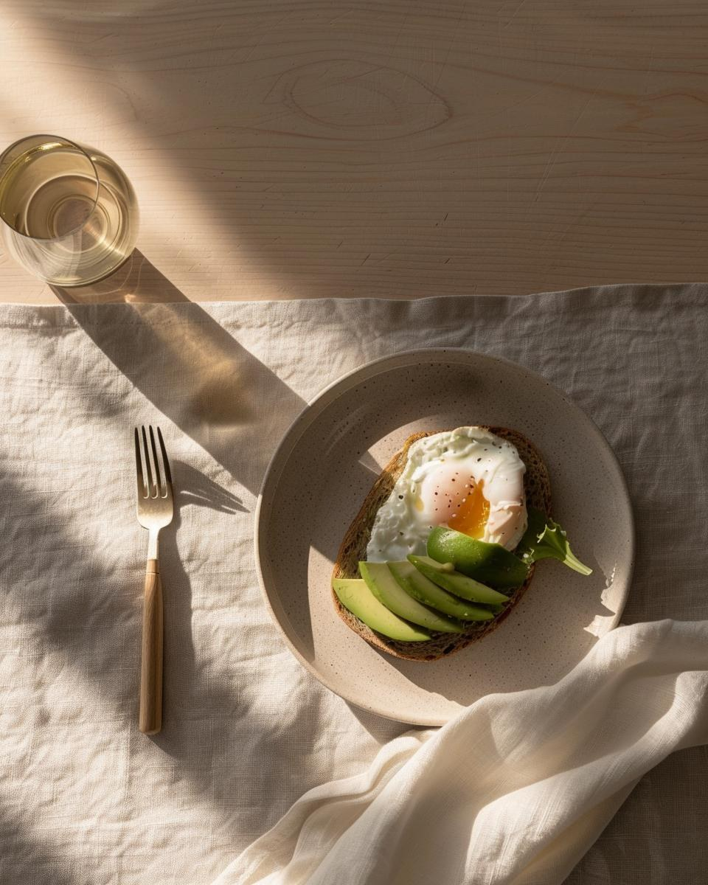

Твоя кулінарна колекція
Готувати може кожен
Рецепти для затишних сніданків, довгих вечерь і всього, що хочеться приготувати просто зараз.

Готуй із
задоволенням! ✳
задоволенням! ✳
Вибір спільноти
Найпопулярніші рецепти
За переглядами та оцінками користувачів
Завантажуємо популярні рецепти…
Знайди свій смак
Що готуємо сьогодні?
Свіжі ідеї
Нові рецепти
Завантажуємо рецепти...
Готуємо разом
Маєш рецепт, яким пишаєшся?
Поділися ним із нашою кулінарною спільнотою.